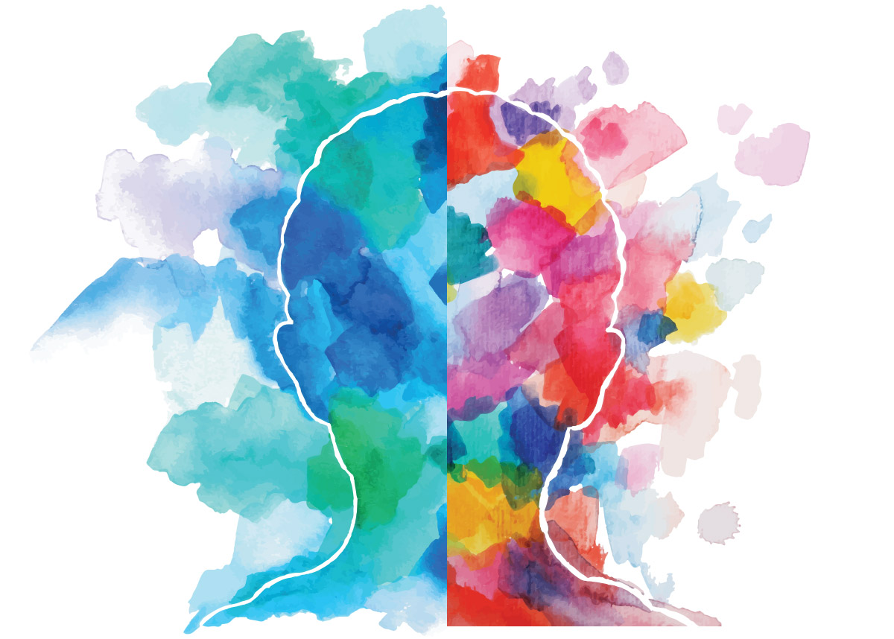

TherapAI
What mental health needs is more sunlight, more candor, and more unashamed conversation. You don’t have to struggle in silence and medication is not always needed.
Start journaling Write what you feel



What mental health needs is more sunlight, more candor, and more unashamed conversation. You don’t have to struggle in silence and medication is not always needed.
Start journaling Write what you feel
TherapAI is an application to recognize one's distortions in thinking that are creating problems, and then to re-evaluate them in light of reality. Through our highly interactive way of journaling using different kinds of input such as speech, visual art, text, multi-select and radio options, we allow users to experience a real therapy session whenever they want to, without having to wait for months, unlike how therapy sessions work here. Our interactive and reciprocally active responses are generated from complex speech recognition, real-time video recognition, sentiment analysis in text recognition and their answers in several scientifically proven tests such as Rorschach Inkblot Test and color tests that use Carl Jung’s archetypal theory for colors. The data once collected from the self-reflective journal is then cleaned, analyzed and used for prediction to tailor future questions more appropriately so the user ends up feeling grateful, compassionate, balanced through their thorough and interactive self reflection.
Analyzing facial expressions for personal emotions to realize an individual's intentions within a social situation
NLP to develop a suite of language models to capture key symptoms of mental illness
A psychological test to analyze see what and how users project feelings in different situations
Talking about your feelings is a part of taking charge of your wellbeing and doing what you can to stay healthy
Creating artwork inside the circle can help silence a person's inner critic and induce a calm, meditative state
Get a solid foundation for your self development efforts. Try Sync mobile app for devices